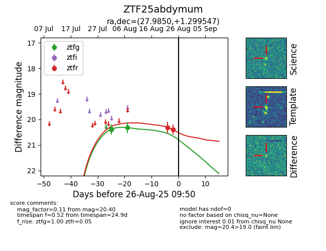

Target ZTF25abdymum at 2025-08-26 10:37, see:
FINK: fink-portal.org/ZTF25abdymum
Lasair: lasair-ztf.lsst.ac.uk/objects/ZTF25abdymum
ALeRCE: alerce.online/object/ZTF25abdymum
alt names
ZTF25abdymum (ztf,fink)
coordinates:
equatorial (ra, dec) = (27.9850,+1.29955)
galactic (l, b) = (152.4758,-58.05901)
photometry
last ztfg=20.32, ztfr=20.40
3 ztfg, 2 ztfr detections
